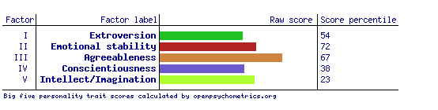
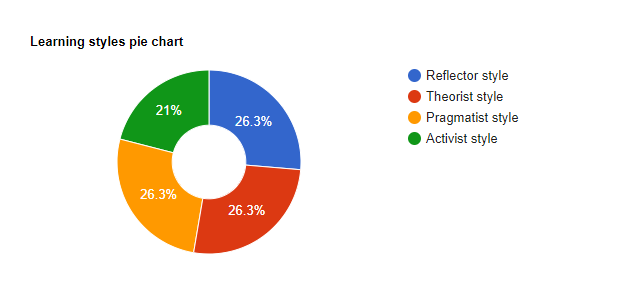
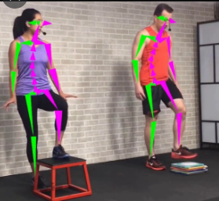

IT Assignment 1
Peronal profile
Name: Danieal Dawit
Student ID: s3943279
Email: s3943279@student.rmit.edu.au
s3943279@student.rmit.edu.au
Personal information
My name is Daniel Dawit, Ethiopian nationality. I was born in Ethiopia; the northern part which is called
‘Adwa’ and came to Australia in late 2018. I can speak multi-languages such as English, Tigrigna, Amharic, and Geez.
Currently, I am a first-year university student, studying IT. I am most passionate about taking pictures, specifically
nature photography.
Interest in IT
I am interested in app development because it exposes me to many work opportunities. Additionally, it helps me with my problem-solving method and increases my creativity.
Since my old brother is a software engineer who graduated in computer science, he started sparking my interest in
IT by showing how his perseverance and problem-solving skills develop. Thus, I wanted to do IT at Monash
University but I found it is far from where I live, sunshine. I started searching about other information technology universities and
throughout my searchings and told by my friends,
I found RMIT is adequate for my needs. I also went to the University for Orientation and it satisfied me. In addition, from this course, I expect to learn programming languages, develop
an understanding of artificial intelligence and develop my problem-solving skill.
Ideal job
Elco. Developer/ Junior Developer
I want to work in an app developer position and what makes appealing this position to me is that it allows me to work with new people which helps me to share and gain knowledge.
- It aligns my interest, brain profiles, and skills with my work.
- It has less screen time and curated an environment to have maximum impact on outcomes.
- It allows you to work across the full software development stack
- It allows me to work on exciting projects with no tech debt
- It pays well 90,000- 140,000 AUD
Qualification required by the work
- A meritocracy, it does not matter how much experience you have; it is all about great ideas and value created.
- Some experience in software development, either personally or professionally.
- Have a passion for discovering and learning about new technology
- Open minded, always looking for opportunities to learn and grow
Qualifications I currently have;
- I do not have any experience in IT.
- Two years working in the customer service position.
- currently learning IT
Personal profile
According to the result of the tests, it has seen extroverted or extraverted, assertive, and intuitive which helps me to engage with the world and make smooth communication with friends. Each of these cognitive functions shows that I can communicate easily with my team and make smooth relations.


Project idea
Developing Fitness tracker app
Overview
I am passionate about fitness and I usually go to the gym with my friends. Therefore, I start to develop an app that helps with working out called Fitness tracker. The fitness tracker app is an app that shows the comprehensive range of cardio and body strength, which maintains many body exercises. This Fitness app performs various functions like tracking calories, tracking working out, and allowing users to set they are working out goals. Many fitness apps have several functions such as those written below and track users working out progress by letting the users create their profile and record their working out.
Motivation
According to Statista fitness and gym participation of Australia, in 2020, over 1.7 million people aged between 25 and 35 years participated in fitness or gym activities. Ever since I started working out, I wondered how the people working out can check whether they are doing their exercise correctly. Since we are in the 21 century, most of us are engaged with technologies. Many people are seen using different fitness apps with various functions. Many of these fitness apps track the users working out progress, calories record, and show instructions on how to do it. However, they do not exactly track users as couches do. Thus, this fitness tracker will help the users to do their activity correctly by showing how to do it with their body on the video.
Description
A fitness app aims to contribute the user with instructions and numerous types of body exercise, nutrition guides, and others. Most of these fitness apps are used to monitor your progress, give you free health and working out tips, monitor your diet, provide personal health coaches. These apps aim to make people lifestyle easier by tracking how much they move and how long of exercise they do. However, most fitness apps are unable to track the exact movement of your body, which means they cannot tell whether you are doing the exercise correctly or not. Thus, I found developing fitness tracking app would help people with their exercise. This fitness tracker app receives data from sensors integrated in to wearable tech trackers or smartphones. What make this app different from other fitness apps is that the app is integrated in a smartphone connected with camera and visual body tracking sensor.
Features of the fitness app
- Wearable and non-wearable device integration—this app can be connected with such as smartwatches and smartphones so it let the users have access in the way they want it.
- User personalization--- It allows the users to have their own personal profile where they can check-up their working out progress. This also includes height, weight, and others, which helps to calculate the user’s body mass index (BMI).
- Goal setting- It lets users to set and follow up their goals. Since the purpose of fitness apps is to show the users measurable results on time, this app will help them to set goals and chase it.
- Video format tutorial- Short video records of some activities teach and show instructions on how the activities have to do. These video tutorials are recorded horizontally not vertically, so that is easy to watch them in smartphones or others.
- sh notification—it reminds the goals and shows their progress, which motivates them to keep doing their activity and chase their goal. Push notifications can also help the users to build a relationship with others people.
- Progress Tracking—It helps to assess the effect on your diet, sleep time, heart rate, oxygen saturation and working out routine. It tracks your exercise routine by tracking your movement throughout the day, and it calculates how much you exercise per how many minutes you work out. It also tracks your sleep cycle by letting you turn on sleep mode and it counts how long you are sleeping.
- Nutrition tracking- It allows the users to control their weight and provides data on required calories and burned calories. It also creates a grocery-shopping list, which encourages the users to have healthy food habits.
- Body movement tracking—What makes this app unique from others is that it is linked with visual body-tracking cameras, sensors, and big screens or smartphones. The users can set any exercise they want to work out. The app will show them some instructions for the exercise and when they are ready to apply it, they can stand in front of the camera. The big screen or smartphone linked with the sensor camera allow them to see their body movement and It tracks the exact bone and muscle movement of the user showing green and red colour lines.

Tools and technologies
There are many tools used to develop this fitness app such as;
- Health graph—It stores health related data and shows the users health records over time.
- BMI calculator—it helps to calculate the user’s body mass index by allowing the user to enter their weight and height.
There are also few hardware requirement tools help developing this app such as,
- Light sensors—these sensors expose the amount of light in the area, which also helps the camera to observe clearly.
- Camera with sensor— Camera with sensor—It records the body and muscle performance.
- Accelerometer—it measures acceleration/ motion.
Skilled required
There are some skills required for this project.
- The software of the app will be written in JavaScript.
- The camera has to be placed where it can observe the user’s movement easily and clearly.
- The instructions of the exercises and video tracking camera have to be connected, so that is able to show whether the exercise is been done in a proper way /the way it is supposed to be done.
- The tracking lines have to be in two different colors, green and red, which the green represents for the muscles working out correctly, and red represents the muscles flex in the wrong position/ the way it is not supposed to be done.
- The app integrated with smartphones has to link with the camera sensors, big screen, and another wearable tech (if there is).
Outcome
If the project is successful, the app will:
- Monitor the user’s diet easily—since it calculates the user’s BMI, it will be able to inform their BMI and give them some information on what to do with it.
- monitor the user’s progress
- Provide fitness and health tips
- Keep motivating the users—it will inspire people to chase their dream and keep working hard by showing how close they are to achieving their goals by giving notifications on their phones.
- Track the user’s working out—this app co-operates with a camera hooked up and a big screen (can be a TV or smartphone) which shows the visual tracking video, will be able to track the user’s working out or physical activity. Since this tracking has the same purpose as having a coach, it is providing a personal coach. Thus, this is how it solves the big problem.